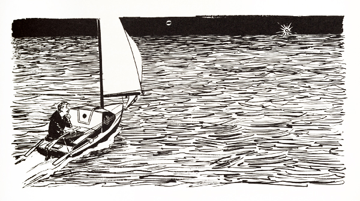

"TINKERBELLE"
Chapter 18
Soon after night cloaked the sea, and before the moon arose, I noticed the loom of a bright light brushing the sky to the northeast. I was pretty sure it couldn't be anything but the Lizard Head Light, but I got out the light list to make certain. The book said the Lizard Light was white, flashing, and had a period of three seconds, of which 0.1 second was flash and 2.9 seconds was eclipse. Its strength was 4,000,000 candle power. I hadn't known there were lights that bright.
I timed the sweeps of the loom. It was the Lizard Head Light all right.
A table in the front of the book indicated that the light, which stood on a cliff and was two hundred and thirty feet above the water, could be seen from a distance of about twenty miles. However, what I saw was not the light itself but its beam in the sky, so we were undoubtedly a good deal farther from it than that; probably closer to twenty-five miles away. It would be dawn before we got to it.
Tinkerbelle skipped joyfully over the waves, headed straight for the light like a horse galloping toward the barn. There was an extra little jauntiness in the spread of her sails, an extra snap in her step, an extra sauciness in the wiggle of her stern. I was proud of her. And happy.
She had guarded me well. Although being knocked overboard had been frightening, especially the first time, we had come through unscathed, thanks to Tinkerbelle. She simply wasn't the sort of boat to leave one behind (unless she was rigged for self-steering) because she had the admirable habit of facing the wind and stopping whenever the tiller and mainsheet were released.
Yes, Tinkerbelle had protected me. She had never allowed herself to be turned bottom up (as I had feared might happen) and even on those few occasions when one of the bigger breaking waves had flipped her over on her beam ends she had righted herself at once. If she had been able to steer herself all the way, I'm sure she could have crossed the ocean entirely on her own, without any help whatever from me.
Besides righting herself after each knockdown, she had steadfastly
 |
kept herself watertight and buoyant. I had expected that at some time along the way she might be filled with water, which I would then have had laboriously to pump out of her; but that calamity never even came close. Nor had there been any significant breakage of her gear, aside from what happened to her rudders.
Tinkerbelle never allowed me to get into a really serious predicament and, consequently, I never became panic-stricken or fearful that we might not reach England safely. I was confident of her seaworthiness before I started the voyage (I wouldn't have started otherwise) and grew more and more pleased with her capability as she demonstrated again and again that my faith in her was not misplaced. In my opinion she was, and is, a nautical gem.
There were some scary moments, some moments of sharp loneliness and some other moments of depression, but for the most part the voyage was a great, glorious, happy adventure. I wouldn't have missed it for the world. And as the fulfillment of a long-time dream, it had a special, deep significance for me that only those persons who have long desired and then achieved can fully appreciate.
It had been an eventful voyage, too. The log revealed that I had sighted about sixty ships in the vast expanse of ocean between Vineyard Sound and the Scilly Isles; and, of these, two had looked Tinkerbelle and me over to make sure we were all right, four others had exchanged words with me "on the run" and five more had actually stopped to converse. One of these last five had also picked up letters to mail when it reached port and another had given me a complete hot meal, the equivalent of a banquet. I had seen one or more vessels on thirty-three days of the voyage (which now was approaching the end of its seventy-seventh day) despite my efforts to stay away from the shipping lanes. The longest I had gone without sighting a ship was nine days, between June 21st and 30th.
All this, it seemed to me, pointed to the fact that the Atlantic was an exceptionally sociable ocean, and a crowded one. Apparently I was never more than a few days away from help if I had needed it and had used the Victory Girl emergency transmitter to summon it. The tradition of helping those in distress that exists on the sea was heart-warming to behold in action, and I hoped all those captains who had taken the time to rush over to rescue me, only to find that I didn't need rescuing, would forgive me for causing them concern and delay. I saluted them with sincere thanks and respect.
I also owed a debt of gratitude to the U.S. Weather Bureau and the U.S. Naval Oceanographic Office, as their reports on winds and waves to be expected on the voyage had proved astonishingly accurate. The larges waves had been twenty-footers, but we hadn't met many of them, fortunately. Most of the time
the waves were under twelve feet high and the wind blew at less than twenty-five knots. We were forced to ride to the sea anchor thirteen times (not counting the times when I was sleeping) and were becalmed thirteen times for varying periods, the longest being about a day.
The moon had risen at about 9:30 P.M. and had now, just before midnight, added its magical touch to the channel scene as we continued slapping, sliding, sloshing toward the Lizard Light. The light itself was visible at last. It had a strangely hypnotic effect. A few minutes of staring at it made it seem very close, although the length of time required to reach it proved it was still many miles away.
As Tinkerbelle jogged along gaily at about four knots, I was enchanted by the sparkling moonglow in the water and the warm lights of far-off freighters. I had felt we were sailing through historic waters when we left Falmouth, Massachusetts, but now as we approached Falmouth, England, that feeling was intensified a hundredfold. What an utterly fascinating land this was.
Falmouth, up ahead, only a dozen miles beyond the flashing Lizard Light, was noted for many things. Long ago Phoenician, Roman and Greek traders had visited the site of the city seeking tin, corn and hides. Then came Danes and Vikings seeking conquests and, after them, Frenchmen seeking revenge. It was from Falmouth that Bartholomew Gosnold had sailed in 1602 on his voyage of discovery to Cape Cod. It was not certain that he landed at the site of Falmouth, Massachusetts, but at any rate he had sailed by, and when Cape Cod's Falmouth was incorporated in 1686 it took the name of the town from which he had begun his voyage. So the two Falmouths definitely were linked in history.
It was to England's Falmouth that the schooner Pickle brought the official news of Nelson's tragic death in 1805 at the moment of his greatest triumph, the defeat of a combined
French and Spanish fleet off Cape Trafalgar on the southern coast of Spain. It was from Falmouth that a British warship sailed to take Napoleon to this exile on the island of St. Helena. And it was into Falmouth that Captain Kurt Carlsen and his first mate, Kenneth Dancy, were brought in January, 1952, after being rescued from the freighter Flying Enterprise, which, after their heroic fourteen-day struggle to get it into port, sank off the Lizard. As a matter of fact, the trawlers Roseland and Excellent had participated in the dramatic Flying Enterprise rescue effort.
Falmouth Harbor also had been the jumping-off point or terminus of quite a few transatlantic small-boat voyages. The voyage of the 18-foot City of Bath, begun in Newfoundland, had ended there in 1881. So had the 1947 voyage of the 22-foot Adventure, which had begun at Miami, Florida. The voyage of the 17-foot raft L'Egare, sailed from Halifax in 1956, ended there, too, as did the 1960 voyage of the 26 ½ -foot Humming Bird, which had started at Antigua in the West Indies. Headed the other way across the Western Ocean, Humphrey Barton and Kevin O'Riordon sailed the 25-foot Vertue XXXV from Falmouth to New York in 1950; Ernst Karulis and Jan Paltins sailed the 25-foot Polaris from there to Panama in 1949-1950, and Patrick Ellam and Colin Mudie jumped off from the same place on their voyage in Sopranino in 1951. Other voyages begun at Falmouth were those of the 31-foot Uldra, 24-foot Wanderer II, 29-foot Moonraker (Dr. E. A. "Peter" Pye's famous cutter), 20-foot Skaffie and 25 ½ foot Valkyr.
I gazed at the flashing light ahead and wondered what Tinkerbelle's voyage had accomplished. Well, for one thing, it had helped to make an honest man of me. When I had asked Virginia to marry me I had promised her two things: one, that we would travel, and two, that although I might be a headache I would never, never be a bore. Well, in fifteen years of marriage we had had a couple of vacation trips to Canada, but it could hardly be said that I was making good on the
promise of travel. And as for the second pledge, after twelve years on the rim of a newspaper copy desk I was becoming a crashing bore, without even the relief of being interesting enough to be a headache. So the situation was critical. It was beginning to look as though I had lied and had married Virginia under false pretenses. But Tinkerbelle saved the day. She banished boredom from our lives and, although she sometimes became a bit of a headache, it only made her that much more interesting. And she made good on my promise of travel for she took me to England and in the process influenced the Plain Dealer to send Virginia and the children over to meet me, an exceedingly kind and gracious act on the P.D.'s part. Virginia appreciated it immensely, I knew, because for years she had dreamed of visiting England. So, Tinkerbelle made a dream of hers come true as well as one of mine.
What had the voyage achieved besides making dreams a reality? I think probably the most important thing it had done for me was to enable me to stand back, away from human society ashore, and look at life for a little while from a new perspective. In a sense, the Atlantic Ocean had been a personal Walden Pond on which I had lived simply, in close communion with nature, confronted by elemental dangers and necessities. It certainly had not been a place for trivialities and I think, perhaps, that fact may have done something to make me a better person inside than I had been before. Anyway, I hope it did.
Although I was lonely and discouraged at times, my primary feeling was of contentment and peace. My boat was my dearest companion and though the wind and sea were sometimes my adversaries, they were mostly friendly and even when they were not they behaved with straightforward honesty according to their inherent natures. To know them was to respect them.
I must confess that, seen from the peace and quiet of mid-ocean, many aspects of life on land seemed grim indeed. Well, we might as well face it; in some basic ways life ashore is grim, especially for underprivileged or underequipped persons. I
couldn't help thinking of the gray flannel suit brigades in big cities ashore, living in a kind of lock-step frenzy, battling noisy highway or subway traffic to get to work in the morning and to return home in the evening, existing on pure nervous energy in between, having to be ever alert to opportunities to get ahead and on guard against the encroachment of rivals.
Henry Thoreau said, "The mass of men lead lives of quiet desperation," and he was probably right. In my life, certainly, there had been many periods of quiet desperation, although I was sure my existence had been less harried than that of most men. I shuddered to think what those less fortunate than I were enduring.
One of the implications of these musings was that my voyage in Tinkerbelle had been prompted by an itch and was itself a form of scratching. That was true. The voyage was something I simply had to do, had wanted to do for a long, long time. In fact, I had wanted to do it so intensely and for such a long time that my natural timidity, the basic Walter Mitty-Caspar Milquetoast cast of my character, had finally been beefed up with a fair-sized dash of Captain Ahab. And that's when planning for the cruise had got under way in earnest.
The story in the Falmouth Packet had referred to me as a hero, but that was absurd. As far as I was concerned, I wasn't taking any great risks, and I was doing something I enjoyed intensely. I really couldn't understand why so much excitement was developing in Falmouth. I'd heard on the radio that a tremendous welcome was being planned and that the mayor had even postponed his vacation in order to be there to greet me when I stepped ashore. And there was talk of thousands of people being on hand to watch Tinkerbelle arrive. It seemed as though a real ordeal was shaping up for me and I'll have to admit that for a few moments I considered turning off to port and heading for Penzance in order to escape it.
A huge welcome by crowds of people and the mayor and all that sort of thing was a far cry from what I had expected. I had
thought that since England was a maritime nation and had had her full share of adventurous sailors little mention would be paid to Tinkerbelle and me. Prior to my discovery of what was going on ashore, I had expected to sail into Falmouth Harbor almost unnoticed, moor my boat at a dock and go to a hotel for a nice bath and sleep. Then, in the morning, I would look for the Falmouth representative of the Associated Press, tell him that I had just sailed the Atlantic singlehanded and that I thought my newspaper back in the States might be interested in having a story about it. Now, it appeared, it wasn't going to work out quite like that.
The impulse to duck away from all the hoopla that was being prepared in Falmouth was strong, but then I thought of how wonderful the R.A.F. had been to me and how well I had been treated by the personnel of the Roseland, Trewarvenneth, Excellent and Brereton and that my family and P.D. colleagues were waiting for me in Falmouth, not to mention the mayor and the crowds, and that I was to be a guest in the country, anyway. It would be inexcusable to skip out and dash the hopes and expectations of all those people, so I decided to go on in as I had planned and face the music.
Dawn was approaching now. The stars disappeared as the inky blackness of the sky gradually changed to gray and then grew lighter and lighter with each passing minute. Up ahead the Lizard Light was still flashing faithfully with its regular three-second rhythm. It was not yet possible to tell how near or far it was, for judging distances over water was extremely difficult, especially when there was nothing of a known size to gauge by.
We kept going as we had all night before the southwest breeze, Tinkerbelle taking it over the port quarter, heeling pleasantly to starboard. More light filled the heavens. Finally, in another thirty minutes or so, the outline of a steep headland could be distinguished from the sea and sky. Land! At last! Land! Solid, firm, immovable land! It was Lizard Head rising
steeply from the ocean; and rolling northeastward from it was the pleasant, green, undulating shoreline leading to Falmouth!
It was a breath-taking view, and it grew even more striking as the daylight increased in intensity and revealed the details of rocky cliffs, lovely green trees and even greener fields, attractively landscaped houses and interestingly winding roads. I consumed it with my eyes, spellbound, transported, enraptured. What a sublime sight.
"Only twelve miles to go," I told Tinkerbelle.
The thought brought on a faint stabbing of pain. The voyage was almost over. It was in its hoary old age, moving swiftly toward its end, its death.
TABLE OF CONTENTS | NEXT CHAPTER